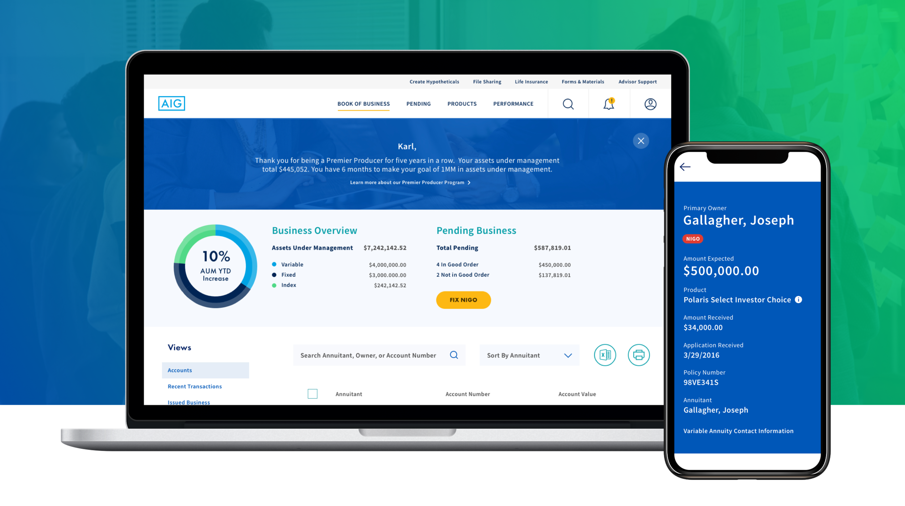
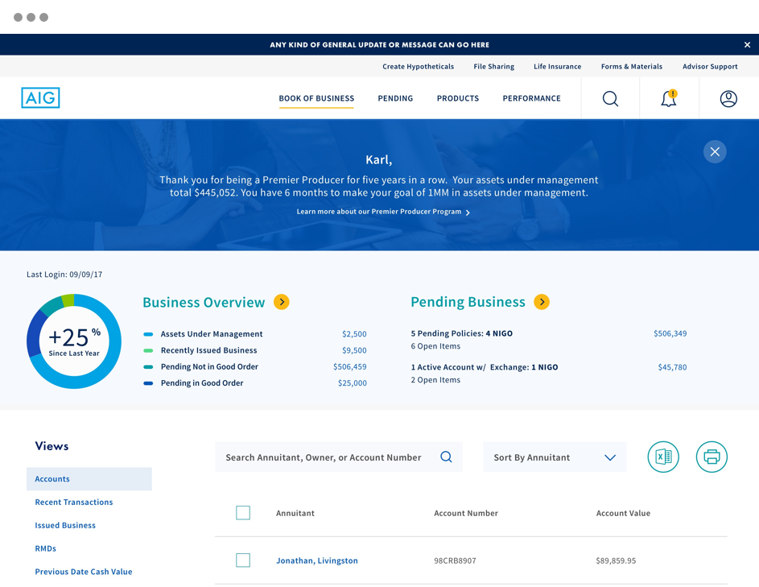
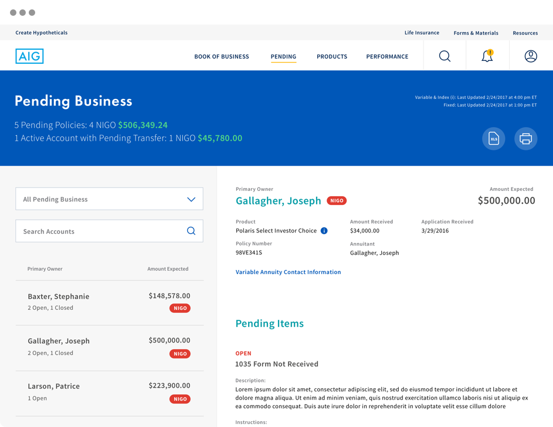
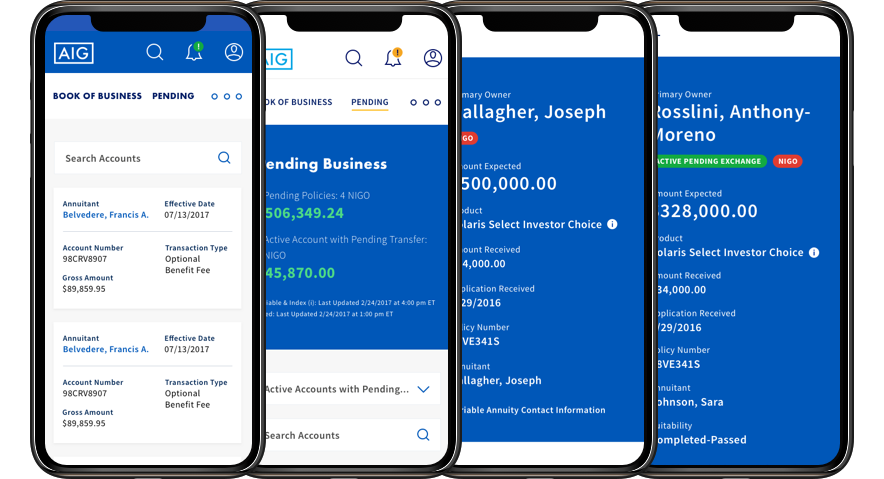

AIG Individual Retirement
Rethinking and redesigning the broker experience from the ground up.

AIG Individual Retirement is a logged in financial platform that allows brokers to view and manage annuities for their clients. The site, not updated since 2009, matched neither current functional expectations nor the aesthetics of AIG's redesigned site.
Problem
The Experience Design team was initially engaged simply to update the design “skin” of the site. Luckily we also started the project by performing 5-weeks of generative primary research, during which we directly interviewed 28 stakeholders and 14 end-users, and surveyed an additional 614 brokers.
The results were eye-opening; brokers hated the experience and were exhilarated by the opportunity to voice their frustrations. Their input convinced us that the solution needed to go well beyond skin deep.
Solution
The experience design team responded to the research finding with a vision that would go much deeper than aesthetics.
The design scenarios combined with the personas and research findings, convinced the c-level stakeholders to engage the design team to rebuild the entire individual retirement broker experience.
The team centered the redesign around the book-of-business which is essentially each broker’s list of clients, annuity products and assets under management.

A key improvement was making it easy for brokers to see pending requirements, options and deadlines for each client, and making it easy to take action on them.

Despite initial pushback from corporate management that “no broker will do business on their phone”, we successfully made the business case for a fully responsive signed in site.

Results
The Individual Retirement experience was the first site measured based on our Quality of Experience (QX) score. This system, developed internally by my team, allowed us to quantify the value of the redesign ito the corporate team.
The net promoter score (NPS) improved to 58 (Excellent) based on a combined 28% drop in detractors and 30% increase in promoters
The helpfulness rating increased by 23% based on managing the brokers’ Book of Business.
The overall quality of experience (QX) score rose from 73 to 90 (out of possible total of 100).
Team: Meg Roebling - Research, Josh Leavitt - Lead Designer, Emily Jeon - Product Design (UI), David Tomere - UX Strategist, Anna Svetlov - Product Design (UX), Nick Phillips - Creative Technologist, Gerald - Creative Technologist, Brent Brooks - Head of Design